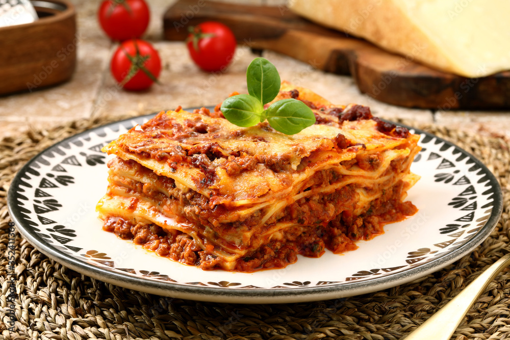

Lasagna alla Bolognese

This dish comes from the region of Emilia‑Romagna (especially the city of Bologna) and is a comforting, layered pasta bake combining a rich ragù meat sauce and a creamy béchamel (besciamella) sauce, layered with fresh or oven-ready pasta sheets and topped with cheese. It delivers deep flavour, satisfying textures, and yet the method remains manageable.
Ingredients (serves 1 personally-sized portion)
For the ragù meat sause:
- 150 g ground beef (≈10-12% fat)
- 1 tsp olive oil
- ½ small onion (~50 g), finely chopped
- 1 small carrot (~40 g), finely diced
- 1 celery stalk (~30 g), finely diced
- 200 g canned diced tomatoes (or tomato passata)
- 1 Tbsp tomato paste
- Salt & pepper to taste
- 50 ml red wine (optional)
- ¼ tsp dried oregano (optional)
For the béchamel sauce:
- 25 g unsalted butter
- 25 g all-purpose flour
- 300 ml whole milk
- A pinch of freshly grated nutmeg
- Salt & white pepper to taste
For the rest:
- 3~4 sheets lasagna pasta (fresh egg or good-quality oven-ready)r
- ~30 g grated Parmigiano-Reggiano (or Parmesan)
- (Optional) ~30 g shredded mozzarella
Steps and Method
- Make the ragù:
- Heat olive oil in a saucepan. Add onion, carrot, celery; sauté until soft (≈5 min).
- Add ground beef; brown until evenly cooked.
- Stir in tomato paste, then add diced tomatoes and wine (if using). Simmer gently for ~20-30 minutes until sauce thickens, season with salt, pepper (and oregano if using).
- Make the béchamel:
- In a separate saucepan, melt butter on low heat. Stir in flour and whisk for ~1-2 minutes to form a roux.
- Gradually whisk in milk, bring to gentle simmer, whisk until smooth and thickens (≈5–8 min). Add nutmeg, salt & pepper; remove from heat.
- Assemble the lasagna:
- Preheat oven to ~180 °C (356 °F).
- In a small baking dish, spread a thin layer of ragù on the bottom. Place one pasta sheet. Add a layer of ragù, then a layer of béchamel, sprinkle some Parmigiano (and mozzarella if using). Then another pasta sheet and repeat: ragù → béchamel → cheese. Finish with pasta sheet topped with ragù, béchamel, Parmigiano and cheese.
- Bake:
- Cover loosely with foil; bake for ~20-25 minutes. Remove foil and bake another ~5-10 minutes until top is golden and bubbling. Let rest ~5-10 min before serving.
Important Notes
- Use fresh or good-quality pasta sheets for best texture; oven-ready sheets save time.
- Simmer the ragù gently until it thickens — this concentrates flavour.
- Whisk the béchamel continuously while adding milk to avoid lumps.
- Letting the finished lasagna rest before cutting helps it set, making cleaner slices.
Recommendations to Serve With
- A crisp green salad with vinaigrette (rocket/arugula & cherry tomatoes).
- A medium-bodied red wine (e.g., Sangiovese) or sparkling water with lemon.
- Crusty bread to mop up sauce.
Conclusion
This Lasagna alla Bolognese hits all three targets: authentic roots, deep flavour from ragù + béchamel, and a clear, step-by-step method. Once the components are in place, assembly and baking are straightforward—and the result is richly satisfying.
Check out for other dishes...